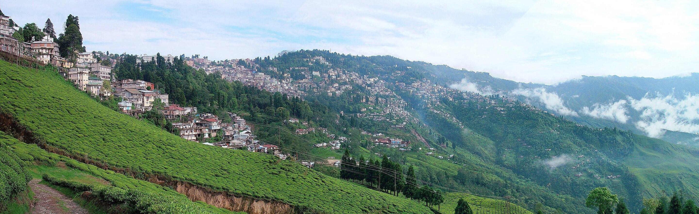
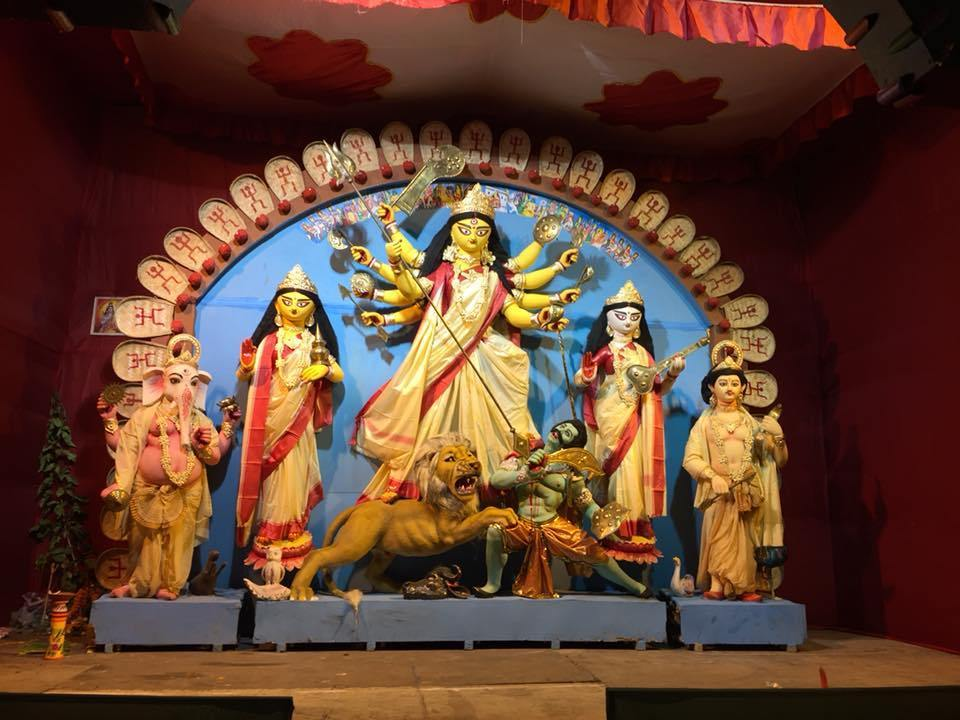
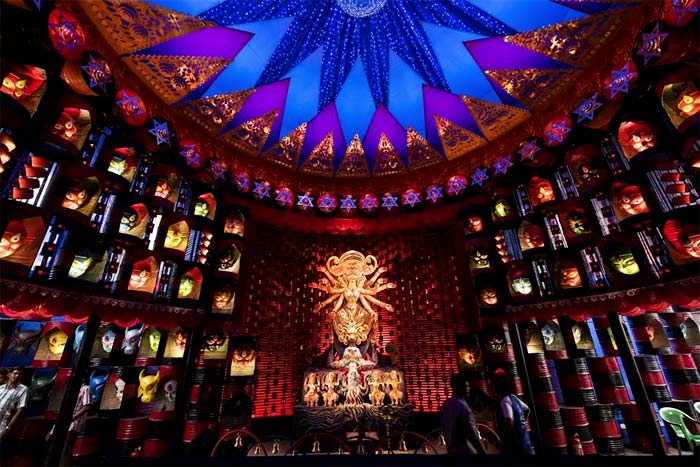
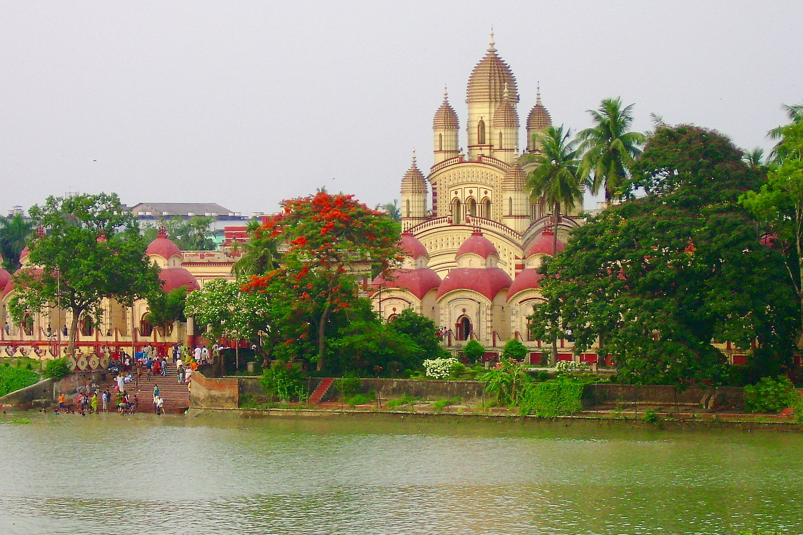
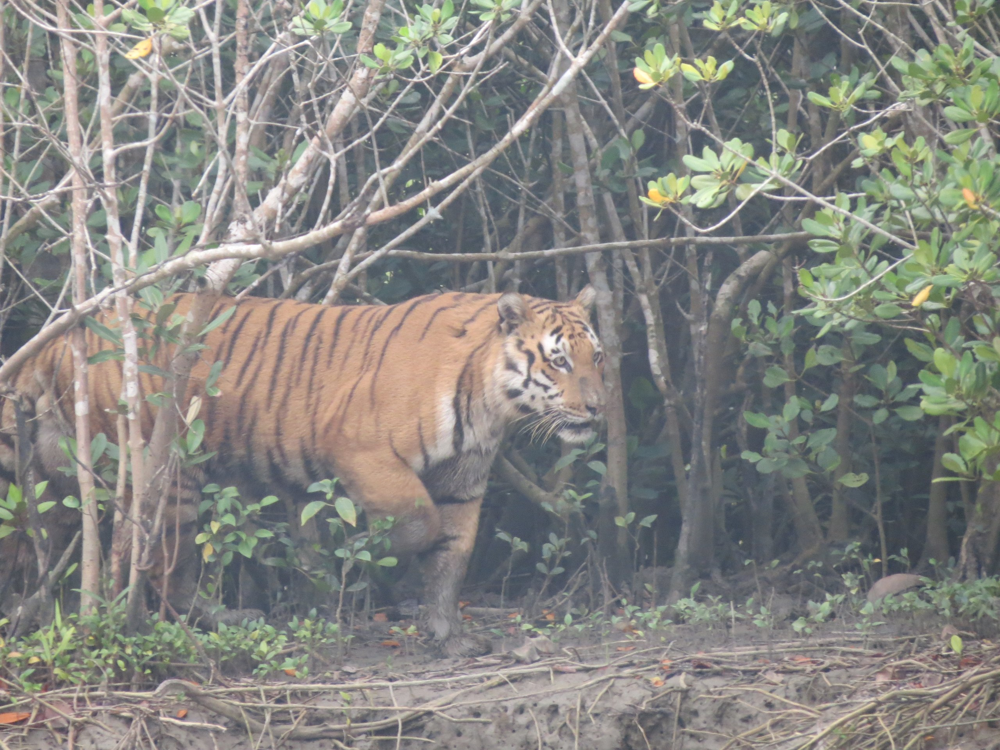
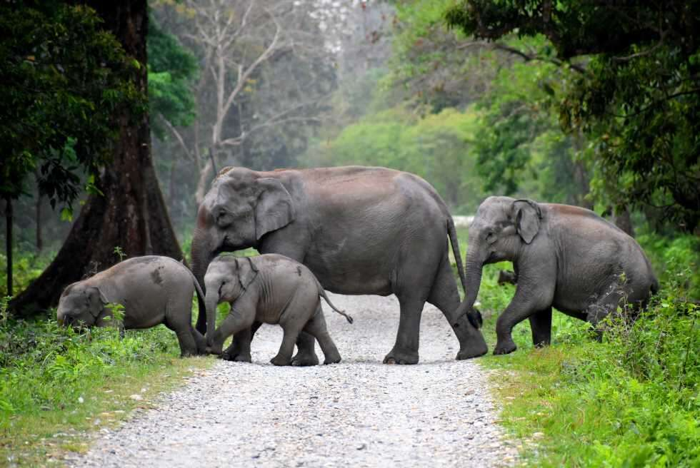

|
West Bengal Bengali: Poshchim Bongo, is a state in the eastern
portion of India. It is situated along the Bay of Bengal,
along with a population of over 91 million inhabitants within
an area of 88,752 km2. West Bengal is the fourth-most populous
and thirteenth-largest state by area in India, as well as the
eighth-most populous country subdivision of the world. As a
part of the Bengal region of the Indian subcontinent, it
borders Bangladesh in the east, and Nepal and Bhutan in the
north. It also borders the Indian states of Jharkhand, Odisha,
Bihar, Sikkim and Assam. The state capital is Kolkata, the
third-largest metropolis, and seventh largest city by
population in India. West Bengal includes the Darjeeling
Himalayan hill region, the Ganges delta, the Rarh region, the
coastal Sundarbans and the Bay of Bengal. The state's main
ethnic group are the Bengalis, with the Bengali Hindus forming
the demographic majority. The area's early history featured a
succession of Indian empires, internal squabbling, and a
tussle between Hinduism and Buddhism for dominance. Ancient
Bengal was the site of several major Janapadas, while the
earliest cities date back to the Vedic period. The region was
part of several ancient pan−Indian empires, including the
Vangas, Mauryans, and the Guptas. The citadel of Gauḍa served
as the capital of the Gauḍa Kingdom, the Pala Empire, and the
Sena Empire. Islam was introduced through trade with the
Abbasid Caliphate, but following the Ghurid conquests led by
Bakhtiyar Khalji and the establishment of the Delhi Sultanate,
the Muslim faith spread across the entire Bengal region.
During the Bengal Sultanate, the territory was a major trading
nation in the world, and was often referred by the Europeans
as the "richest country to trade with". It was absorbed into
the Mughal Empire in 1576. Simultaneously, some parts of the
region were ruled by several Hindu states, and Baro-Bhuyan
landlords, and part of it was briefly overrun by the Suri
Empire. Following the death of Emperor Aurangzeb in the early
1700s, the proto-industrialised Mughal Bengal became a
semi-independent state under the Nawabs of Bengal, and showed
signs of the first Industrial revolution.
The region was a hotbed of the Indian independence movement
and has remained one of India's great artistic and
intellectual centres.[14] Following widespread religious
violence, the Bengal Legislative Council and the Bengal
Legislative Assembly voted on the Partition of Bengal in 1947
along religious lines into two independent dominions: West
Bengal, a Hindu-majority Indian state, and East Bengal, a
Muslim-majority province of Pakistan which later became the
independent Bangladesh. The early and prolonged exposure to
British administration resulted in an expansion of Western
education, culminating in developments in science,
institutional education, and social reforms in the region,
including what became known as the Bengali Renaissance.
Several regional and pan−Indian empires throughout Bengal's
history have shaped its culture, cuisine, and architecture.
The region was a hotbed of the Indian independence movement
and has remained one of India's great artistic and
intellectual centres.[14] Following widespread religious
violence, the Bengal Legislative Council and the Bengal
Legislative Assembly voted on the Partition of Bengal in 1947
along religious lines into two independent dominions: West
Bengal, a Hindu-majority Indian state, and East Bengal, a
Muslim-majority province of Pakistan which later became the
independent Bangladesh.
Post-Indian independence, as a welfare state, West Bengal's
economy is based on agricultural production and small and
medium-sized enterprises.[15] The state's cultural heritage,
besides varied folk traditions, ranges from stalwarts in
literature including Nobel-laureate Rabindranath Tagore to
scores of musicians, film-makers and artists. For several
decades, the state underwent political violence and economic
stagnation before it rebounded In 2023–24, the economy of West
Bengal is the sixth-largest state economy in India with a
gross state domestic product (GSDP) of ₹17.19 lakh crore
(US$220 billion),[4] and has the country's 20th-highest GSDP
per capita of ₹121,267 (US$1,500).[5] Despite being one of the
fastest-growing major economies, West Bengal has struggled to
attract foreign direct investment due to adverse land
acquisition policies, poor infrastructure, and red
tape.[17][18]
|
|

|
|


|


|
|


|
|